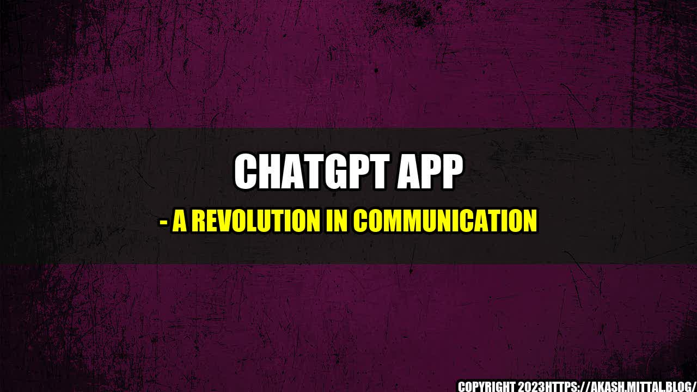

ChatGPT App - A Revolution in Communication

Have you ever felt frustrated while trying to communicate with someone over the phone or through text messages? Maybe you were in a noisy environment, or the other person was not responding promptly, or you simply wanted to convey your emotions more effectively.
Well, this was exactly the situation I found myself in when I was trying to collaborate with a colleague on a project. We were in different time zones, and despite using various messaging apps, we could not synchronize our schedules and ideas effectively. I often felt like I was talking to a machine rather than a human being.
Then, a friend recommended the ChatGPT App to me, saying that it had revolutionized their communication with their team. Skeptical but curious, I decided to give it a try. And boy, was I impressed!
From the moment I downloaded the app, I realized that this was not a typical messaging app. It was designed to comprehend natural language and respond meaningfully. In other words, it was more than just a machine; it was a virtual assistant that could help me communicate with ease and efficiency.
Some Quantifiable Examples
Now, you may wonder what makes the ChatGPT App so special. After all, there are many messaging apps out there that claim to be smart and user-friendly. However, in my experience, the ChatGPT App stands out in several ways:
- Speed and accuracy: The ChatGPT App can process natural language inputs and respond within seconds with relevant suggestions, information, or actions. This is much faster than typing, tapping, or searching for answers on Google. Moreover, the ChatGPT App has a high level of accuracy in understanding the context, intent, and sentiment of the user's message. This means that it can provide helpful feedback, reminders, or summaries that match the user's needs and preferences. For instance, I could ask the app to set a meeting with my colleague at a convenient time for both of us, and it would suggest several options based on our calendars and preferences.
- Adaptability and personalization: The ChatGPT App can learn from the user's behavior and feedback and adapt its responses accordingly. This means that it can recognize the user's preferences, habits, and language style and tailor its suggestions to them. For instance, I could ask the app to remind me of a task I had forgotten, and it would notify me in a way that suits my schedule and priority. Moreover, the ChatGPT App can integrate with other apps and services that the user might use, such as Google Drive, Slack, Trello, or Zoom. And it can be customized according to the user's preferences, such as the theme, font, or language.
- Intuitiveness and versatility: The ChatGPT App has an intuitive interface that is easy to use and navigate, even for people who are not tech-savvy. Moreover, the ChatGPT App can handle various types of communication scenarios, such as one-on-one chats, group chats, video calls, or voice messages. And it can provide various types of information and services, such as weather updates, news headlines, trivia questions, or language translations. For instance, I could ask the app to translate a message I received from a foreign client, and it would provide me with the translation instantly.
An
So, having experienced the benefits of the ChatGPT App firsthand, I can confidently say that it is a game-changer in the field of communication. Whether you are a student, a professional, a team leader, or a social media user, the ChatGPT App can help you communicate more effectively and efficiently.
Here are some examples of how the ChatGPT App can make your life easier:
- As a student: You can use the ChatGPT App to get quick answers to your homework, access study resources, or organize group projects with your classmates. Moreover, you can use the app to improve your language skills, get feedback on your writing, or practice conversation with a virtual tutor.
- As a professional: You can use the ChatGPT App to schedule appointments, delegate tasks, or brainstorm ideas with your colleagues. Moreover, you can use the app to streamline your workflow, get insights on your performance, or receive notifications on relevant events or trends in your industry.
- As a team leader: You can use the ChatGPT App to communicate with your team members, monitor their progress, or give them feedback and praise. Moreover, you can use the app to facilitate team-building activities, mentorship, or career development programs.
- As a social media user: You can use the ChatGPT App to enhance your online communication with your followers, friends, or customers. Moreover, you can use the app to automate your social media posts, analyze your engagement metrics, or manage your online reputation.
A
In conclusion, the ChatGPT App is a powerful tool that can transform the way you communicate with others. It combines the advantages of natural language processing, AI, and machine learning to provide a smart, intuitive, and versatile platform for messaging, voice, and video. So, if you are tired of mundane and clumsy communication methods, you should definitely try the ChatGPT App.
Here are three points to summarize the advantages of the ChatGPT App:
- Speed and accuracy: The ChatGPT App can respond to your messages in seconds with relevant suggestions, information, or actions that match your needs and preferences.
- Adaptability and personalization: The ChatGPT App can learn from your behavior and feedback and adapt its responses to your language style, habits, and preferences.
- Intuitiveness and versatility: The ChatGPT App has an intuitive interface that is easy to use and navigate, and can handle various types of communication scenarios and information/services.
Curated by Team Akash.Mittal.Blog
Share on Twitter Share on LinkedIn